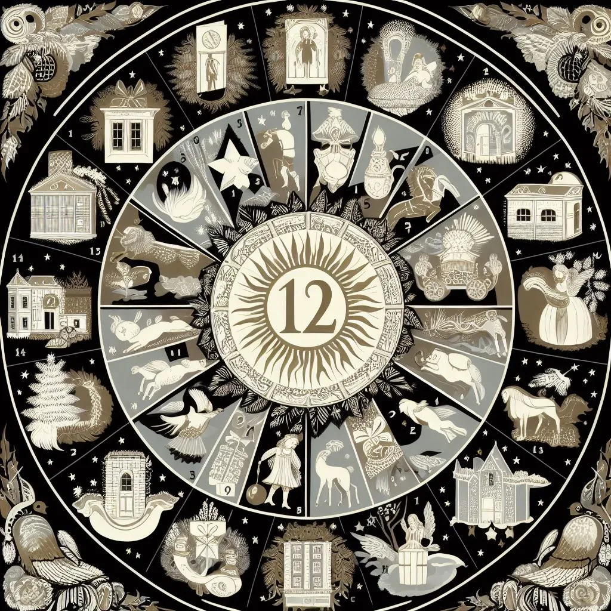

Uncovering the Fascinating History Behind the Twelve Days of Christmas
The 12 Days of Christmas is a well-known holiday song that has been sung and enjoyed for centuries. But do you know the history behind this catchy tune? The origins of the Twelve Days of Christmas date back to the 16th century, and its meaning has evolved over time. From religious symbolism to hidden messages, the history behind this beloved song is as fascinating as it is complex. In this blog post, we will uncover the intriguing history behind the 12 Days of Christmas and explore the various interpretations that have emerged over the years.
The origins of the 12 Days of Christmas
The origins of the 12 Days of Christmas can be traced back to the 16th century in England and Europe. The song itself is believed to have originated in France, but it has been adapted and translated into various languages over the years.
During the Middle Ages, Christmas was not just a one-day celebration, but a period of festivities that lasted for twelve days. These twelve days, beginning on Christmas Day and ending on Epiphany (January 6th), were considered a time of merry-making, feasting, and revelry.
The 12 Days of Christmas song was originally a cumulative song, meaning that each verse added a new gift to the list. The lyrics of the song were meant to be a playful and humorous way to recount the lavish gifts and festivities that took place during the Christmas season.
However, some historians and music scholars have suggested that the song may have a deeper meaning. They believe that each gift mentioned in the song has a hidden religious symbolism. For example, the partridge in a pear tree represents Jesus Christ, and the two turtle doves symbolize the Old and New Testaments of the Bible.
Over the years, there have been various interpretations and adaptations of the 12 Days of Christmas song. In some cultures, the song is sung as a children's game, with each participant taking turns to sing a verse and add a new gift to the list. In other cultures, the song is performed as a choral or instrumental piece during Christmas concerts and performances.
Regardless of its origins and meaning, the 12 Days of Christmas has become a beloved holiday song that is sung and enjoyed by people all over the world. It has become a symbol of the festive and joyous spirit of the Christmas season, and a reminder of the traditions and customs that have been passed down through generations.

The symbolic meaning behind each day's gift
The 12 Days of Christmas is not just a catchy holiday tune, but it also holds symbolic meanings behind each day's gift. While the song may seem like a simple list of presents, many historians and music scholars have suggested that each gift mentioned in the song has a hidden religious symbolism.
The Partridge in a Pear Tree: The partridge in a pear tree is believed to represent Jesus Christ. Just as a mother partridge is willing to sacrifice her life to protect her young, Jesus sacrificed himself for the salvation of mankind.
Two Turtle Doves: The two turtle doves are said to symbolize the Old and New Testaments of the Bible. The Old Testament represents the laws and prophecies of God, while the New Testament embodies the teachings and grace of Jesus Christ.
Three French Hens: The three French hens signify the three virtues of faith, hope, and love (also known as charity). These virtues are essential in leading a virtuous and fulfilling life.
Four Calling Birds: The four calling birds are thought to represent the four Gospels of the New Testament: Matthew, Mark, Luke, and John. These four books share the life, teachings, death, and resurrection of Jesus Christ.
Five Gold Rings: The five gold rings are often interpreted as the first five books of the Old Testament, also known as the Pentateuch or the Torah. These books include Genesis, Exodus, Leviticus, Numbers, and Deuteronomy, which contain the foundation of Jewish laws and history.
Six Geese a-Laying: The six geese a-laying are believed to symbolize the six days of creation as described in the book of Genesis. Each day represents a different element of the world's creation, including light, sky, land, plants, sun and moon, and animals.
Seven Swans a-Swimming: The seven swans a-swimming are often associated with the seven gifts of the Holy Spirit: wisdom, understanding, counsel, fortitude, knowledge, piety, and fear of the Lord. These gifts are believed to empower individuals to live a faithful and righteous life.
Eight Maids a-Milking: The eight maids a-milking symbolize the eight Beatitudes preached by Jesus in the Sermon on the Mount. These Beatitudes outline the core virtues and characteristics that lead to true happiness and spiritual blessedness.
Nine Ladies Dancing: The nine ladies dancing represent the nine fruits of the Holy Spirit: love, joy, peace, patience, kindness, goodness, faithfulness, gentleness, and self-control. These fruits are regarded as the qualities that manifest in the lives of individuals filled with the Holy Spirit.
Ten Lords a-Leaping: The ten lords a-leaping are often associated with the Ten Commandments given to Moses on Mount Sinai. These commandments serve as moral guidelines for humanity, teaching us to love and honor God and our fellow human beings.
Eleven Pipers Piping: The eleven pipers piping are thought to symbolize the eleven faithful apostles of Jesus, excluding Judas Iscariot. These apostles spread the teachings and message of Jesus Christ to all corners of the world.
Twelve Drummers Drumming: The twelve drummers drumming represent the twelve points of belief in the Apostles' Creed. The Creed summarizes the essential doctrines of Christianity, affirming the faith in the triune God and the life, death, and resurrection of Jesus Christ.
While the origins and interpretations of the 12 Days of Christmas may vary, the song remains a cherished part of holiday traditions around the world. It serves as a reminder of the deep religious symbolism and the rich history behind this festive season.
The historical context of the song
The 12 Days of Christmas holds significance not only in its symbolic meaning but also in its historical context. The origins of the song can be traced back to the 16th century in England, during a time when the Catholic Church faced persecution.
Catholicism was banned in England under the rule of King Henry VIII and later during the reign of Queen Elizabeth I. With the prohibition of Catholic practices, including the celebration of Christmas, Catholics found creative ways to observe their faith. The 12 Days of Christmas served as a coded catechism song, allowing Catholics to pass down their teachings and beliefs in a discreet manner.
Each gift mentioned in the song represented a religious symbol or doctrine, as mentioned in the previous section. By singing this song, Catholics could educate and reinforce their religious beliefs within their communities, even in the face of religious oppression.
Over time, the song gained popularity beyond the Catholic community and became a beloved Christmas carol in its own right. It spread throughout England and eventually made its way to other parts of the world. Today, the 12 Days of Christmas is a widely recognized and cherished holiday tradition.
Understanding the historical context of the song adds depth to its meaning and allows us to appreciate the resilience of individuals who sought to preserve their faith during a challenging time. The song serves as a reminder of the unwavering devotion and creativity of those who sought to pass down their beliefs in the face of adversity.
As we sing the 12 Days of Christmas during the holiday season, let us remember the historical significance behind the song and the message of faith and perseverance it carries.
How the 12 Days of Christmas is celebrated today
The 12 Days of Christmas is not just a historical song, but also a holiday tradition that is still celebrated today. While the origins of the song may have been rooted in religious symbolism and hidden meanings, its current-day celebration is more focused on the festive spirit and joy of the holiday season.
In many cultures, the 12 Days of Christmas is seen as a period of merriment and celebration that starts on December 25th and ends on January 5th, with the following day being the Epiphany. Throughout these twelve days, various customs and traditions are observed to mark the occasion.
One common tradition is the exchange of gifts. Similar to the gifts mentioned in the song, people often give small presents or tokens of appreciation to friends, family, or loved ones each day during the 12 Days of Christmas. This tradition symbolizes generosity and the spirit of giving during the holiday season.
Another popular tradition is the creation of Twelve Nights of Christmas displays or decorations. Some people choose to display a different Christmas-themed item or decoration each night, representing the different gifts mentioned in the song. This can include ornaments, figurines, or even handwritten notes with messages of love and joy.
Additionally, many communities and organizations organize special events and activities during the 12 Days of Christmas. These can include concerts, parades, festivals, and community gatherings where people come together to celebrate and spread holiday cheer. Some places even have "Twelfth Night" parties or balls on January 5th, where people dress up in festive attire and enjoy music, dancing, and feasting.
Overall, the 12 Days of Christmas is celebrated today as a time of joy, community, and sharing. Whether it's through gift-giving, decorations, or participating in festive events, people embrace the spirit of the holiday season and come together to create lasting memories and traditions. As we celebrate the 12 Days of Christmas, let us continue to embrace the joy and goodwill that it represents, spreading love and happiness to those around us.
Popular Interpretations and Controversies Surrounding the Song
While the 12 Days of Christmas is widely known as a joyful and festive holiday song, it has also sparked various interpretations and controversies throughout its history. These different perspectives and debates add depth and intrigue to the song's meaning and symbolism.
One popular interpretation of the song suggests that each item mentioned in the lyrics holds a hidden religious significance. According to this interpretation, the "true love" mentioned represents God, and the gifts symbolize different Christian beliefs or virtues. For example, the partridge in a pear tree is said to represent Jesus Christ, while the five golden rings symbolize the first five books of the Bible, known as the Torah.
However, there is ongoing debate and disagreement among scholars and historians about the true origins and intended meanings of the song's lyrics. Some argue that the song was simply a fun and nonsensical rhyme meant to entertain children and bring amusement during the holiday season. Others believe that the lyrics were used as a mnemonic device to teach religious lessons to young people in a time when practicing or openly celebrating certain forms of Christianity was forbidden.
Another controversy surrounding the 12 Days of Christmas is the cost of the gifts mentioned in the song. In recent years, various sources have attempted to calculate the total cost of purchasing all the gifts, assuming each gift is given in repetition according to the song's lyrics. These calculations often result in exorbitant sums of money, with some estimates reaching into the tens of thousands or even millions of dollars.
However, it's important to note that the song's true meaning does not lie in its monetary value. Instead, it emphasizes the spirit of generosity, love, and giving that is central to the holiday season. The gifts mentioned in the song serve as symbols of goodwill, kindness, and the joy of sharing with others.
Regardless of the specific interpretations and controversies surrounding the 12 Days of Christmas, one thing remains clear: the song has endured and continues to be celebrated as a cherished holiday tradition. Its catchy melody and playful lyrics have brought joy to generations of people, and its deeper meanings and interpretations only add to its enduring appeal.
As we sing along to the 12 Days of Christmas and partake in the holiday festivities, let us appreciate the rich history and diverse interpretations of this beloved song. Whether we see it as a religious parable, a fun rhyme, or simply a joyful expression of love and generosity, the 12 Days of Christmas reminds us of the true spirit of the holiday season – a time for merriment, goodwill, and celebrating with loved ones.
Reflecting on the Enduring Legacy of the 12 Days of Christmas
The 12 Days of Christmas is not just a holiday song; it is a cultural phenomenon with a rich and enduring legacy. Generation after generation, people have embraced and celebrated this beloved song, making it an integral part of the holiday season. Let us delve into the fascinating history and lasting impact of the 12 Days of Christmas.
Historical Significance - The origins of the 12 Days of Christmas can be traced back to medieval Europe. During this time, Christmas was not just a single day but an entire season of festivities. The 12 Days of Christmas marked the period between Christmas Day (December 25th) and the Feast of Epiphany (January 6th). This religious observance was a time of joyous celebration and feasting.
Symbolism and Meaning - The 12 Days of Christmas has captivated audiences with its whimsical lyrics and colorful imagery. Each day's gift represents a symbol or metaphor, adding depth and intrigue to the song. From the iconic partridge in a pear tree representing Jesus Christ to the golden rings symbolizing the Torah, each gift carries a hidden meaning. These interpretations have sparked debates and discussions among scholars, further enriching the song's cultural significance.
Cultural Adaptations - The song has transcended its religious roots and become a cherished tradition across cultures and nations. It has been adapted and translated into numerous languages, allowing people from diverse backgrounds to engage with its message of love, generosity, and joy. This global adoption has solidified the 12 Days of Christmas as a universal symbol of the holiday season.
Musical Legacy - The catchy melody of the 12 Days of Christmas has ensured its longevity throughout the centuries. Its playful tune and repetitive structure make it easy to sing along and remember. Countless recordings and renditions have been made, showcasing the song's versatility and ability to be interpreted across different musical genres.
Pop Culture References - The 12 Days of Christmas has also experienced a significant presence in popular culture. It has been featured in movies, television shows, and even commercials, further embedding itself into the fabric of society. These references not only expose new audiences to the song but also foster a sense of nostalgia and familiarity among those who grew up with it.
Family Traditions - Many families incorporate the 12 Days of Christmas into their holiday celebrations. Whether it's singing the song together, creating themed decorations, or exchanging small gifts each day, these traditions strengthen family bonds and foster a sense of shared joy and anticipation.
As we reflect on the enduring legacy of the 12 Days of Christmas, let us appreciate its ability to bring people together, spark conversations, and evoke feelings of warmth and merriment. Whether it is through its historical significance, cultural adaptations, musical legacy, pop culture references, or family traditions, the 12 Days of Christmas continues to be a beloved and cherished part of the holiday season.